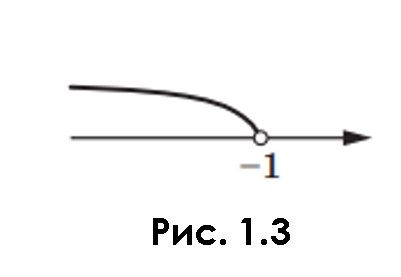

Розв’язування лінійних нерівностей з однією змінною. Числові проміжки
Якщо який-небудь доданок перенести з однієї частини нерівності в другу, змінивши при цьому його знак на протилежний, то отримаємо нерівність, рівносильну даній.
Якщо обидві частини нерівності помножити (поділити) на одне й те саме додатне число, то отримаємо нерівність, рівносильну даній.
Якщо обидві частини нерівності помножити (поділити) на одне й те саме від’ємне число, змінивши при цьому знак нерівності на протилежний, то отримаємо нерівність, рівносильну даній.
Завдання
Розв’яжіть нерівність 2(2 – 3x)>3(x + 6) – 5.
Розв’язання. Запишемо ланцюжок нерівностей, рівносильних даній:

4-6x >3x + 18 - 5; 4-6x >3x + 13;
-3x - 6x > -4 + 13;
–9x>9;
x < –1.
Множиною розв’язків останньої нерівності є числовий проміжок, який позначають так: (-∞; -1). Точки координатної прямої, які зображають розв’язки нерівності x < –1, розміщені ліворуч від точки –1 (рис.1.3) та утворюють промінь, у якого «виколото» початок.
Відповідь можна записати одним зі способів: (–∞; –1) або x < –1.